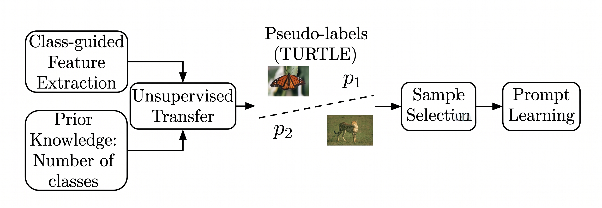
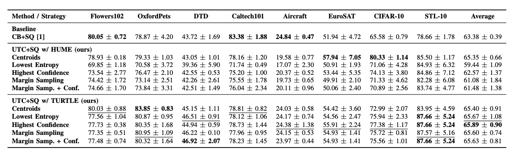

Unsupervised Transfer Clustering for Mitigating Cold Start in Active Prompt Learning
Abstract
Vision-Language Models (VLMs) are able to achieve impressive zero-shot classification performance by aligning visual and textual representations, but each new task still demands handcrafted prompts. Active Prompt Learning (APL) combines Active Learning (AL) and Prompt Learning (PL) into a single framework, allowing for the usage of the VLM prior knowledge for iteratively querying the most informative images to be labeled. However, the cold-start problem is still relevant for APL methods, where the performance of the initial query can be worse than random sampling. While recent state-of-the-art APL methods mitigate with balanced sampling and multimodal features, they rely on rigid, distance-based clustering to group these features. This simplistic approach can struggle to capture the complex, high-dimensional semantic distributions inherent to VLMs, leading to suboptimal query representativeness. Unsupervised transfer can be applied to these features as a possible alternative, since it is capable of inferring the underlying human labeling of a task without any form of supervision. This way, samples can be grouped in semantically coherent clusters. This paper proposes Unsupervised Transfer Clustering with Selective Querying (UTC+SQ), a framework that enhances a recent APL approach by leveraging state-of-the-art unsupervised transfer model. These models generate high-fidelity pseudo-labels that establish semantically meaningful clusters, allowing for the selection of more relevant samples. Experimental evaluations demonstrate that shifting from distance-based to projection-based clustering improves the representativeness of the queried subset, achieving accuracy gains in 6 of the 8 datasets tested.
Method Overview

Overview of the UTC framework: figure above presents an overview of our approach, where we keep the class-guided features from APL, but we replace its distance-based clustering technique by unsupervised transfer models that are able to generate semantically meaningful pseudo-labels. Using these pseudo-labels we define clusters and select the most informative sample from each one. The selected samples are annotated by a human oracle and used for prompt learning. This process is repeated for each round of APL, where we kept the same annotation budget per round and budget-saving selective querying from APL.
Experimental Results
To address the cold-start problem during the first round of APL, we evaluate the UTC+SQ framework using HUME and TURTLE unsupervised transfer methods against the k-means baseline (CB+SQ). While CB+SQ performs well on datasets with clearly separated features (Flowers102, Caltech101, Aircraft), its simplistic distance-based approach struggles with complex feature distributions. In contrast, our semantic clustering approach combined with sampling strategies consistently yields superior results: Centroids associated with TURTLE obtained good results on well-separated clusters, whereas Highest Confidence sampling performed better in challenging, poorly separated domains like CIFAR-10 and EuroSAT. Overall, UTC+SQ with TURTLE (Highest Confidence) emerged as the best approach, achieving the highest average accuracy (65.89%) and outperforming the baseline on 5 of 8 benchmark datasets (OxfordPets, DTD, EuroSAT, CIFAR-10, and STL-10), demonstrating that semantic pseudo-labels maximize the efficiency of the initial query budget.

Active Learning Curves
The graphs below compare the baseline (CB+SQ) against the best configuration of the UTC+SQ framework in terms of mean accuracy and standard deviation across 8 APL rounds. Conversely, on Caltech101 and Flowers102, the baseline initially outperformed our method, but the superior representativeness of the semantic clusters allowed our method to close the gap and surpass the baseline by round 8. Overall, the mean accuracy trajectories across the rounds confirm that our UTC+SQ framework provides a highly effective foundation, achieving the highest final accuracy on 6 out of the 8 benchmarks.
@inproceedings{portella2026utc,
title = {Unsupervised Transfer Clustering for Mitigating Cold Start in Active Prompt Learning},
author = {André Portella, Samuel Felipe dos Santos and Jurandy Almeida},
booktitle = {Conference on Graphics, Patterns and Images (SIBGRAPI)},
pages = {1-6},
year = {2026}
}